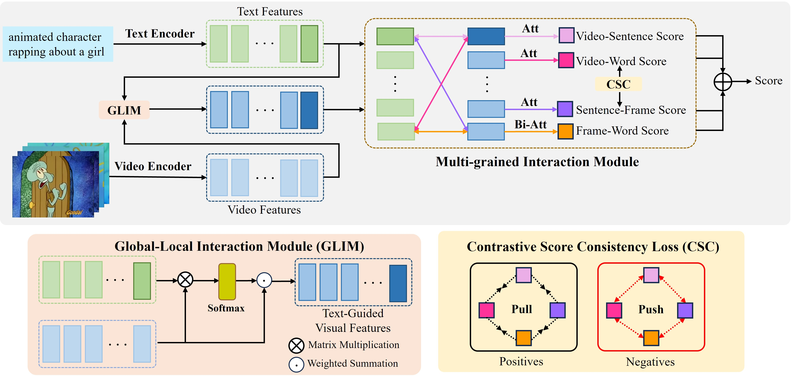

Abstract
ext-video retrieval aims to find the most semantically similar videos with given text queries. However, since videos contain more diverse content than texts, the main semantics expressed by each text-video pair is often partially relevant. The primary methods involve the utilization of language-video attention module to align texts and videos. Though effective, this paradigm inevitably introduces prohibitive computational overhead, resulting in inefficient retrieval. In this paper, we propose a simple yet effective method called Global-Local Contrastive Consistency Learning (GLCCL) to achieve texts and videos semantics alignment. Specifically, we design a parameter-free Global-Local Interaction Module (GLIM) to generate semantic-related frame and video features in a text-guided manner. Furthermore, a Contrastive Score Consistency (CSC) loss is developed to promote consistency learning among different scores on positive pairs and suppress consistency learning on negative pairs. Empirical evidence suggests that CSC loss provides the model with robust discriminative power between positives and hard negatives. Extensive experiments on three benchmark datasets, including MSR-VTT, DiDeMo and VATEX, demonstrate the effectiveness and superiority of our approach.

Visualization

Text-to-Video

Video-to-Text